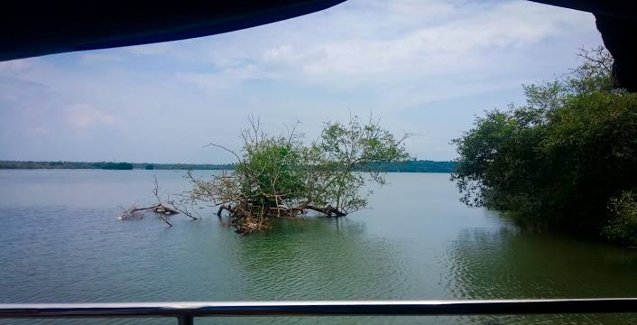
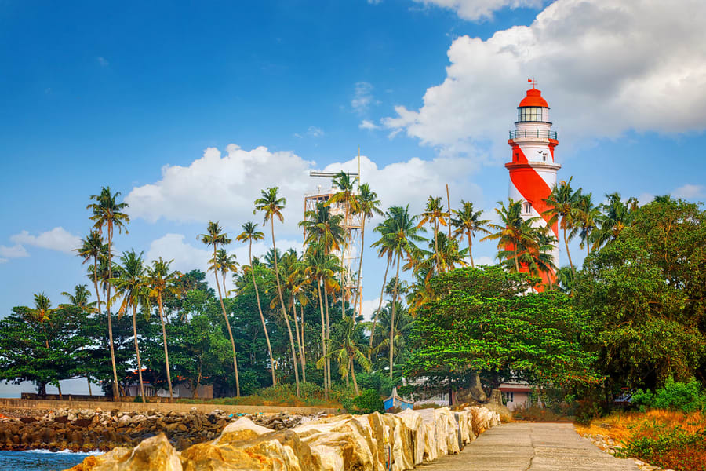
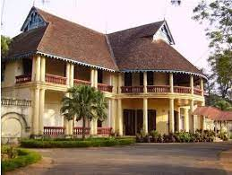

Ashtamudi Lake
Ashtamudi Lake, in the Kollam District of the Indian state of Kerala, is the most visited backwater and lake in the state. It possesses a unique wetland ecosystem and a large palm-shaped water body, second only in size to the Vembanad estuary ecosystem of the state. Ashtamudi means 'eight braids' in the local Malayalam language.
Kollam Beach

Kollam Beach, also known as Mahatma Gandhi Beach, is a beach at Kollam city in the Indian state of Kerala. Kollam Beach is the first 'Beach Wedding Destination' in Kerala. The beach also features a park of international standard, the Mahatma Gandhi Park, which was inaugurated on 1 January 1961 by the then Vice President of India, Zakir Hussain
Thangassery Lighthouse
Tangasseri Lighthouse or Thangassery Lighthouse is situated at Tangasseri in Kollam city of the Indian state of Kerala. It is one of the two lighthouses in the Kollam Metropolitan Area and is maintained by the Cochin Directorate General of Lighthouses and Lightships. In operation since 1902, the cylindrical lighthouse tower painted with white and red oblique bands has a height of 41m.
Thevally Palace
Thevally Palace or Thevalli Palace is a popular heritage Palace situated at the banks of Ashtamudi lake, in Thevally, Kollam city. It is an important historic monument in the state of Kerala in India. Thevally Palace was built in between 1811 and 1819 the reign of Gowri Parvati Bayi. It is considered as a Hallmark of Kollam City.